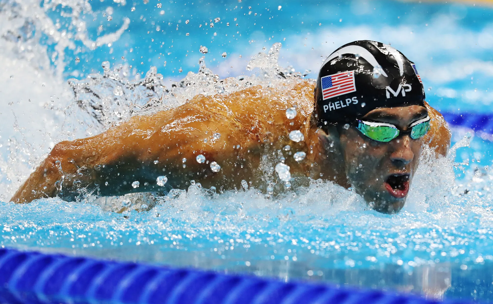

Butterfly
Butterfly:

Butterfly is the second fastest stroke, and is usually the most physically demanding stroke. It is typically the hardest to learn for begginers.
There are 3 main distances:
A famous Butterfly swimmer and one of the most famous swimmers is Michael Phelps of USA

Other strokes:
Freestlye
Backstroke
Breaststroke
Butterfly
Individual Medley